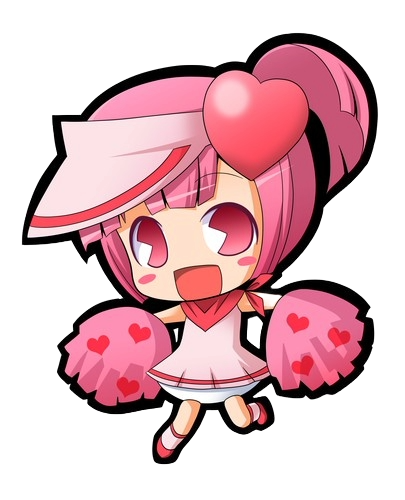
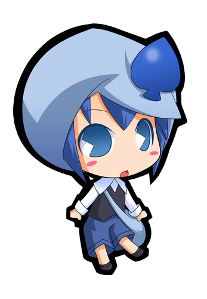
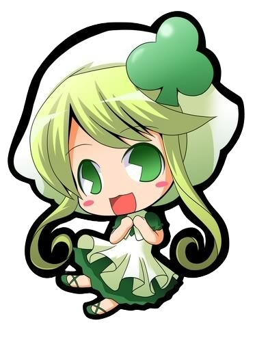

Ran (ラン) was Amu Hinamori's first Guardian Character to hatch. She represents Amu's desire to be more honest and athletic.
Ran

Miki (ミキ; Miki) is Amu Hinamori's second Guardian Character. She represents Amu's desire to be cool, artistic, and also disobedient and level-headed.
Miki

Su (スゥ, Suu) is Amu Hinamori's third Guardian Character. She represents Amu's desire to be more caring and improve her domestic skills.
Su